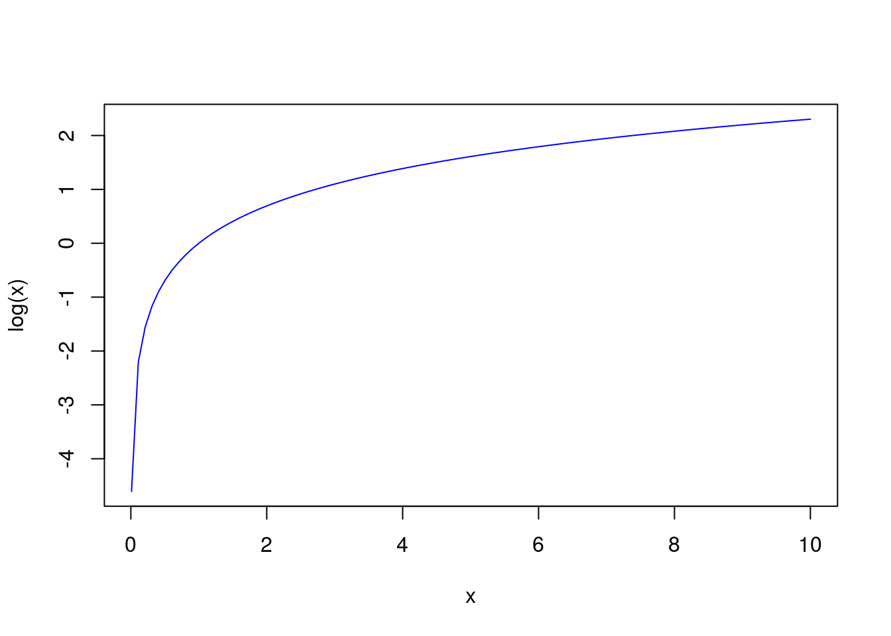
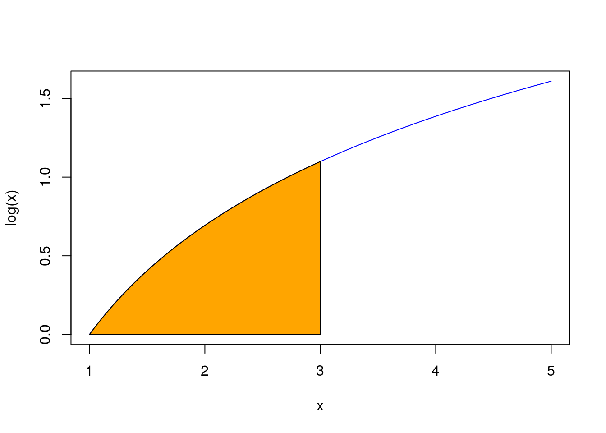
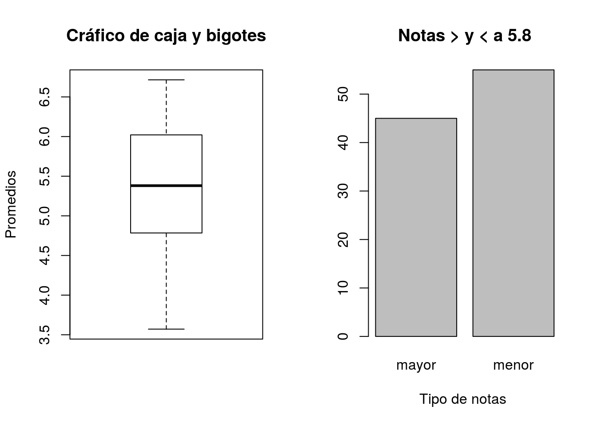

ELEMENTOS DE PROBABILIDAD E INFERENCIA ESTADÍSTICA
2021-02-16
OBJETIVOS Y ESTILO DEL DOCUMENTO
- ESTE LIBRO ES UN EXPERIMENTO RESPONSABLE.
Mediante este documento busco presentarte algunos elementos de La Teoría de Probabilidad e Inferencia Estadística que un estudiantes de ciencias básicas aplicas debería conocer. Todos los elementos a los cuales haré referencia serán presentados como “acciones” o “transformaciones” de determinados objetos.
El estilo de la forma de presentar los elementos, ejemplos y resultados formales tendrá por objetivo de acostumbrarte a pensar de una forma “computacional”. Los análisis siempre serán realizados empleando una lista de acciones que puede ser reproducido por cualquier otro lector. Es decir siempre actuaremos sobre lista de acciones u operaciones escritas en términos de funciones mátematicas que sean reproduciblesmediante algun software por cualquier estudiante en un pc.
Operación
Una operación es una transformación única de un objeto. Este objeto puede ser una lista de números naturales o reales, un conjunto de puntos del plano cartesiano o funciones matemáticas, entre otros. Una operación de un objeto \(x\) en un unico objeto \(y\) es graficado por:
Definición.0.1 Una operación Op transforma un objeto x de forma única en un objeto y. Esta operación es representado por:
\[\mbox{Op}: x \mapsto y. \]
Escribimos \[ y = \mbox{Op}(x) \] para simbolizar que y es el resultado de aplicar Op sobre x.
Estas simbologías enfatizan dos aspectos diferentes. El primero, de izquierda a derecha, enfatiza: Op transforma de x en y. La segunda, de derecha a izquierda, enfatiza: y es un resultado de operar Op sobre x.
La siguiente notación es necesaria. Considera una lista de operaciones \(\mbox{Op}_1, \ldots, \mbox{Op}_n\). Simbolizaré por \[ \mbox{Op}_1: x \mapsto y_1 \wedge \ldots \wedge \mbox{Op}_n: x \mapsto y_n, \] la aplicación independiente de las operaciones \(\mbox{Op}_1, \ldots, \mbox{Op}_n\) sobre x, por \[ \mbox{Op}_i: x \mapsto y \ \checkmark \] la aplicación exitosa de \(\mbox{Op}_i\) sobre x, y además
\[ \mbox{Op}_i: x \mapsto y \ \sim\checkmark \] en el caso contrario.
Una forma usual de describir una operación es en terminos de una ecuación o algoritmo, es decir:
\[ \mbox{Op}(x): x \mapsto \mbox{``una ecuación o algoritmo que depende de $x$''.} \]
Operación cotideana
Operación aritmética
Comienzo mostrando que una operación aritmética es una transformación de número(s) a un número.
Las operaciones aritmeticas que comunmente utilizamos son operaciones de transformación de números. Por ejemplo, la división por \(2\) transforma un número \(x\) en \(x/2\). Asi también, la exponencializacion por \(2\) transforma un número \(x\) en \(x^2\).
Ejemplo.0.1 Considere la operación de división por \(2\) \(\mbox{Op}_1: x \mapsto x/2\) y la operación de exponencializacion por \(2\) \(\mbox{Op}_2: x \mapsto x^2\).
Luego, la aplicación independiente de \(\mbox{Op}_1\) y \(\mbox{Op}_2\) sobre 10 resulta:
\[ \mbox{Op}_1: 10 \mapsto 5/2= 5 \ \checkmark \wedge \mbox{Op}_2: 10 \mapsto 10^2 =100 \ \checkmark. \]
Aunque podría parecer trivial, realizaré
interpretaciones de estos resultados para destacar el uso de este
simbología. Primero, \(\mbox{Op}_1: 10 \mapsto 5\) simboliza:
\(\mbox{Op}_1\) transforma \(10\) en \(5\), en cambio,
\(5 = \mbox{Op}_1(10)\) simboliza: \(5\) es el resultado de
aplicar \(\mbox{Op}_1(10)\) sobre \(10\). Segundo,
\(\mbox{Op}_2: 10 \mapsto 100\) simboliza: \(\mbox{Op}_2\)
transforma \(10\) en \(100\), en cambio, \(100=\mbox{Op}_2(10)\): 100
es el resultado de aplicar \(\mbox{Op}_2\) sobre 10.
Ejemplo.0.2 EJEMPLO DE SUMA Y RESTA.
Operación compuesta
Operación compuesta cotideana
Definición.0.2 La aplicación secuencial independiente de dos operaciones \(\mbox{Op}_1\) y \(\mbox{Op}_2\) sobre \(x\) es la secuencia ordenada \[ (\mbox{Op}_1: x \mapsto y) \hookrightarrow (\mbox{Op}_2: x \mapsto z) , \]
interpretado por: aplicamos primero \(\mbox{Op}_1\) sobre \(x\) para en segundo lugar aplicar \(\mbox{Op}_2\) sobre \(x\). El símbolo \(\hookrightarrow\) es llamado de operador de transición interpretado \(\mbox{Op}_1 \hookrightarrow \mbox{Op}_2\): “aplicamos \(\mbox{Op}_1\) y luego aplicamos \(\mbox{Op}_2\)”.
Definición.0.3 La operación secuencial dependiente (recurrente) \(\mbox{Op}_2 \circ \mbox{Op}_1\) es la operación compuesta por \(\mbox{Op}_1\) y \(\mbox{Op}_2\) es:
\[ \mbox{Op}_2 \circ \mbox{Op}_1: x \mapsto \left( \mbox{Op}_1: x \mapsto y \ \hookrightarrow \ \mbox{Op}_2: y \mapsto z \right) \] o de forma escalonada \[ \begin{aligned} \mbox{Op}_{2}\circ \mbox{Op}_1&: x \mapsto\\ (\mbox{Op}_1 &: x \mapsto y \\ \hookrightarrow \mbox{Op}_2 &: y \mapsto z) \\ \end{aligned} \] la cúal es interpretada por “x es transformado a y por \(\mbox{Op}_1\) para que despúes y sea su vez transformado a z por \(\mbox{Op}_2\)”.
La aplicación de \(\mbox{Op}_2 \circ \mbox{Op}_1\) sobre \(x\) es simbolizado por \(\mbox{Op}_2 \circ \mbox{Op}_1(x)\).Ejemplo.0.4
La operación secuencial dependiente de \(\mbox{Op}_1\) y
\(\mbox{Op}_2\) sobre \(10\), simbolizada por \(\mbox{Op}_2 \circ \mbox{Op}_1(10)\), es la aplicación en orden secuencial
\[ \mbox{Op}_1: 10 \mapsto 10/2 \hookrightarrow \mbox{Op}_2: 10/2 \mapsto (10/2)^2 = 25 \ \checkmark .
\]
Ejemplo.0.5 EJEMPLO DE SUMA Y RESTA CASO COMPUESTO.
Veamos un caso finito general. La operación secuencial dependiente de una secuencia de operaciones \(\mbox{Op}_1, \ldots, \mbox{Op}_n\) sobre \(x\) representada por
\[ \begin{aligned} \mbox{Op}_{n}\circ \ldots \circ \mbox{Op}_1&: x \mapsto \\ (\mbox{Op}_1 &: x \mapsto y_1 \\ \hookrightarrow \mbox{Op}_2 &: y_1 \mapsto y_2 \\ \hookrightarrow \quad \quad &: \ldots \\ \hookrightarrow \mbox{Op}_n &: y_{n-1} \mapsto y_n) \end{aligned} \]
simboliza que “aplicaremos \(\mbox{Op}_1\) sobre \(x\) para obtener \(y1\), luego aplicaremos \(\mbox{Op}_2\) sobre \(y_1\) para obtener \(y_2\), asi sucesivamente hasta obtener \(y_n\) de \(\mbox{Op}_n\)”.
Eso es representado en el siguiente diagrama.
Hasta el momento hemos definidos las operaciones de división por \(2\) y exponensialización por \(2\) las cuales fueron aplicadas sobre \(10\). Esto es un ejemplo de un dominio de operaciones (PENSAR) sobre \(10\), es decir la lista
\[ 10, \mbox{Op}_1, \mbox{Op}_2 \]
que comprende el objeto y las operaciones a ser aplicadas sobre. El domino de operaciones nos habilita a trabajar con datos. Sumado a \(\wedge\) y \(\hookrightarrow\) realizamos operaciones de forma ordena (* arreglar).
Esta lista puede ser reproducible en el software R (o en
Python o C\(++\)) definiendo \(\mbox{Op}_1(x)=\)function(x) x/2 y \(\mbox{Op}_2(x)=\)function(x) x^2. En la práctica, este
dominio de operaciones debe existir en la memoria temporal de un
programa computacional. En este ejemplo con R, esto puede ser
ejecutado mediante los códigos
x = 10 # definimos que x será 10,
op1=function(x) x/2 # creamos Op1 ,
Op2=function(x) x^2 # creamos Op2,los cuales quedarán guardados en nuestra memoria temporal de R
Operación sobre puntos
Un tipo de operaciones que consideraremos en este trabajo es la de representar un conjunto de puntos en el plano cartesiano o en el espacio Euclineado tridimensionaL o un simple número.
Operación cotideanas sobre puntos
Destaco que funciones, como
la logaritmica \(\log: (0,\infty) \to \mathbb{R}\) es un
conjunto de puntos del tipo
\(\{(x,y)\in \mathbb{R}\times \mathbb{R}: y=\log(x) \mbox{ para } x\in (0,\infty) \} \subseteq \mathbb{R} \times \mathbb{R}\).
La función \(\log(x)\) puede ser representada en una hoja de papel buscando sus puntos criticos y esbozando una dibujo. En este documento estaremos interesados en gráficas generada por programas computacionales. En el caso del programa R este puede ser representado por la operación \(Op_3(f)=\) curve(f,from= x1, to= x2, col=“nombre color”), donde \(f\) es la función de una variable que queremos graficar, x1 es valor inicial, x2 el valor final sobre el cúal evaluaremos \(f\) y col es el color de la curva.
En R este es implementado por:
Lo cual produce la siguiente representación

Ademas de gráficar \(\log(x)\), podemos trasnformar esta función de una forma lineal en otra función que simbolizaremos por \(\log^{*}\) la cual es dada por \[ \mbox{Op}_4(\log(x)) = \log^{*}(x) = 2 + 5\log(x).\]
En R esta transformación puede ser implementado por
Otra operación que podemos realizar con \(\log\) es calcular el área bajo la curva en el intervalo \((1,3)\), es decir, la integral \[\int_{1}^{3} \log(x)dx\] representado gráficamente

La cual puede ser calculado via la operación \(\mbox{Op}_5(f)\)=integrate(f, lower=, upper=), en que \(f\) es la función a ser integrada, lower y upper son las cotas del intervalo de integración.
obteniendo el resultado
1.295837 with absolute error < 1.4e-14,
Es decir el área es aproximadamnete igual a \(1.29\) con un error (absoluto) menor a \(1.4e-14\).
Ejemplo.0.6 En este caso, nuestro dominio de operaciones sobre el conjunto \(\log(x)\) es la lista:
\[ \log(x), \mbox{Op}_3, \mbox{Op}_4. \]
Operación multivaria
Una operación artimetica en general es una operación multivariada que transforma una lista ordenada de números \(x_1, \ldots, x_n\) en un número \(x\), para \(n=1,2,...\).
La suma, el producto y la exponencialización por dos puden ser definidos de esta manera. Veamos los siguientes ejemplos
Ejemplo.0.7 La suma de \(n\) números naturales es una operación \[\begin{eqnarray*} \mbox{Op}_5: \mathbb{N} \times \ldots \times \mathbb{N} ( \mbox{n-veces}) \to \mathbb{N}\\ (x_1,\ldots,x_n) \mapsto x_1 + \ldots + x_n. \end{eqnarray*}\]
La multiplicación de \(n\) números naturales es una operación
\[\begin{eqnarray*}
\mbox{Op}_6: \mathbb{N}\times \ldots \times \mathbb{N} ( \mbox{n-veces}) \to \mathbb{N}\\
(x_1,\ldots,x_n) \mapsto x_1 \times \ldots \times x_n.
\end{eqnarray*}\]
Un ejemplo de exponensialización de \(n\) números naturales es una operación
\[\begin{eqnarray*} \mbox{Op}_7: \mathbb{N}\times \ldots \times \mathbb{N} ( \mbox{n-veces}) \to \mathbb{N}\\ (x_1,\ldots,x_n) \mapsto x_1^2 + \ldots + x_n^2. \end{eqnarray*}\]
Ejemplo.0.8 Otro ejemplo de operación es la composición: \[ \mbox{Op}_7 \circ \mbox{Op}_5 (x_1,\ldots, x_n)= (x_1+\ldots x_n)^2.\] El dominio de aplicaciones \[(x_1,\ldots, x_n), \mbox{Op}_5, \mbox{Op}_6, \mbox{Op}_7.\]
Operación matricial
Una operación matrices transforma una matriz en otra matriz, en un vector o en un escalar.
Operación probabilistica o estadística
En este trabajo estaremos interesados en operaciones probabilisticas y estadísticas, las cuales transforman eventos aleatorios y muestras de variables en resumenes, gráficos e inferencias. Mencionamos aquellas que serán de nuestro interes.
- Experimentar: transformar una serie de pasos estipulados por la literatura científica en una observación empírica o subjetiva desde un objeto de estudio.
Ejemplo.0.9 El curso de Elementos de Probabilidad e Inferencia Estadistica (EPIE) de este año tendrá dos secciones con un total de 100 alumnos quienes aprobaron el curso de Estadistica básica durante el semestre pasado.
El profesor EPIE quiere tener información previa de su curso con respecto a su desempeño en el curso anterior. Para esto, ejecuta un péqueño experimento: usa un generador de números aleatorio y elige 30 de los 100 alumnos a los cuales les envia un correo preguntando su carrera y promedio en el curso anterior.
El profesor obtiene una muestra \(x=(x_1,\ldots,x_{30})\) de promedios y la lista \(c=(c_1,\ldots, c_{30})\) de sus correspondientes carreras encontrando: ingenieria cívil industrial, ingenieria química e ingeniería en recursos naturales.
- Cuantificar y categorizar: codificar una observación por un número o una categoría (clasificación conceptual).
Ejemplo.0.10 Podemos contar el número de repeticiones de cada carrera, por ejemplo: ingenieria cívil industrial (8), ingenieria química (11) e ingeniería en recursos naturales (11).
También podemos categorizar cada promedio según sea mayor o menor a 5.8, obteniendo la transformación de los promedios \(y=(y_1,\ldots,y_{30})\) en que \(y_i=1\) si \(x_i\leq 5.8\) y \(y_i=0\) en el caso contrario.
- Reducir: transformar un objeto en otro menor dimensión y/o complejidad.
Ejemplo.0.11 Podemos reducir la muestra de los promedios al promedio de los promedios \((x_1,\ldots,x_{30}) \mapsto \frac{1}{30}(x_1+\ldots+x_{30})\) obteniendo \(\bar{x}= 5 .5\).
Podemos reducir las categorias \(y\) a la proporción de notas mayores y menores a \(5 .8\) \((y_1,\ldots,y_{30}) \mapsto (p1,p2)\), en que \(p1= 45\%\) y \(p2= 55\%\), mayor o menor, respectivamente.
- Graficar: transformar una lista de puntos en un objeto visual.
Ejemplo.0.12 Para la muestra de promedio \(x\) podemos representarlos en un gráfico de caja y bigotes. Para las categorías \(y\) un gráfico de barras.

- Describir: transformar una observación y/o cuantificación y/o categorización en una característica de un objeto sin pretender deducir o inducir.
Ejemplo.0.13 El centroide de los promedios observados es igual a 5.5, es decir, la muestra de promedios gravita entorno al centro 5.5. Los promedios más frecuente son menores a 5.8.
- Estimar: cuantificar o categorizar un fenomeno desconocido con base a la observación parcial acerca de él desde un experimento.
Ejemplo.0.14 En base a la muestra, estimo que el promedio de notas del curso Estadística es aproximadamente 5.5. En base a la muestra, la proporción de promedios menores a 5.8 es igual a a 55%.
- Inferir: deducir o inducir conclusiones sobre un fenomeno desconocido con base a la observación parcial acerca de él desde un experimento.
Ejemplo.0.15 En base a la muestra, estimo que el promedio de notas del curso Estadística es aproximadamente 5.5. En base a la muestra, la proporción de promedios menores a 5.8 es igual a a 55%.
- Componer: elaborar un objeto tomando partes o propiedades de otros.
Ejemplo.0.16 Pensar.
Operación \(=\) función matemática
La propiedad de una operación Op se estudia al escribirla como
una función:
\[ \begin{aligned}
\mbox{Op}: \mbox{Dom} \to \mbox{Rec}, & \\
A \mapsto \mbox{Op}(A),&
\end{aligned}
\] en donde Dom y Rec son el dominio y recorrido de Op,
respectivamente. En términos simples, Dom es la lista de los
objetos sobre los cuales actua Op y Rec es la lista de las
transformaciones que Op puede realizar.
Ambas operaciones pueden ser formalizadas como funciones consideremos el dominio y recorrido \(\mbox{Dom}=\mbox{Rec}=\mathbb{N}\). Por ejemplo:
\[ \begin{aligned} \mbox{Op}_1: \mathbb{N} \to \mathbb{N}, & \\ x \mapsto \mbox{Op}_1(x)= x/2,& \end{aligned} \]
Formalmente, dado que \(\mbox{Op}_1\) y \(\mbox{Op}_2\) son funciones,
formalmente, la aplicación secuencial de estas operaciones sobre
\(A\) es la composición de funciones
\[
\begin{aligned}
\mbox{Op}_2 \circ \mbox{Op}_1: \mbox{Dom}_1 \to \mbox{Rec}_1=\mbox{Dom}_2
\to \mbox{Rec}& \\
A \mapsto \mbox{Op}_2\left(
\mbox{Op}_1(A) \right).&
\end{aligned}
\]
Organización del documento
El Capitulo \(1\) presenta los elementos básicos de análisis exploratorio y resumen de datos uni y bivariado.